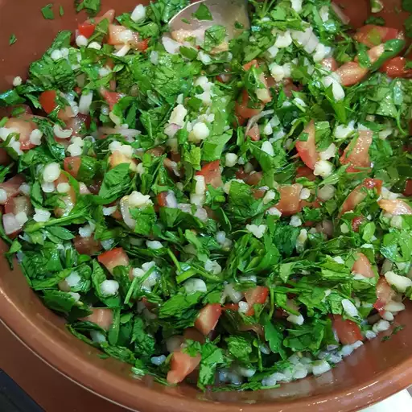

Tabbouleh Recipe

Tabbouleh is a Middle Eastern grain salad made with bulgur wheat, tomatoes, onions, herbs, lemon juice, and olive oil.
- ¼ cup bulgur
- ½ cup boiling water
- 5 ripe tomatoes, finely diced
- 1 small onion, finely diced
- 1 cup freshly chopped parsley
- ¼ cup freshly chopped mint leaves
- 1 lemon, juiced
- 2 teaspoons olive oil
- salt to taste
Steps
- Place bulgur in a small mixing bowl. Add boiling water, mix, and cover with a clean towel. Let stand for 1 hour. Drain any excess water.
- Combine tomatoes, onion, parsley, mint, lemon juice, olive oil, and salt. Add bulgur; mix well and serve.